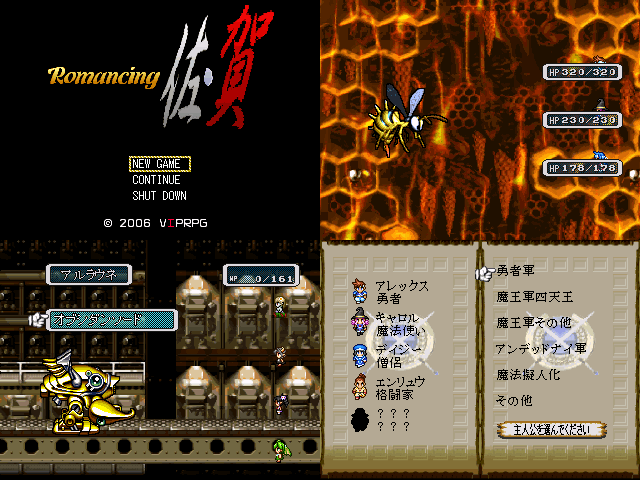

| No,034 【Romancing 佐・賀】 |
| ダウンロード（5.53MB） |
 |
| 【ＨＮ】 グリーン兄さん 【コメント】 24日までに完成しそうにないから体験版っぽいのになるかもわからんね ／￣￣＼ ／ _ノ ＼ | （ ●）（●） 紅白とか間に合わないだろ… . | （__人__） 常識的に考えて… | ｀ ⌒´ノ . | } . ヽ } ヽ ノ ＼ / く ＼ ＼ | ＼ ＼ ＼ | |ヽ、二⌒)、 ＼ |
| 【管理人コメント】 もはやゲーム元の境がねぇｗｗｗｗｗ |